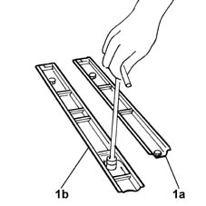
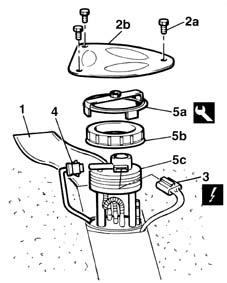
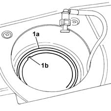
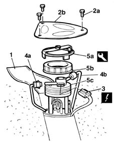

1040A70 submerged pump assembly complete with level guage control - r + r
- Path
- Procedures > 10 ENGINE UNIT > 1040 FUEL TANK AND PIPES > 1040A FUEL TANK AND COMPONENTS > 1040A70 submerged pump assembly complete with level guage control - r + r
- Kind
- repair procedure (removal / refitting; the operation number is the code)
- Applies to
- all engines; all production periods
- Interactive page
- https://sloeber94.github.io/elrnDB-fMltpl/en/#/2891247
Applies to: engines: 1.6 16v; all production periods
 Removing
Removing
 Refitting
RefittingWith the ignition key in the OFF position, disconnect the battery negative terminal.
 | Name | Connector |
|---|---|---|
- | Battery |
7050A90 rear seat (one) - r re - repair with seat removed
7040L14 panel brackets (1) covering seat attachments to passenger compartment floor - r r
Remove the rear seats: in the centre and on the right side.
1. Undo the fixing bolts and remove the left guide (1a) for the right side seat and the right guide (1b) for the centre seat.

Applies to: engines: 1.6 16v; all production periods
1. Lift the pre-cut section of the floor covering to gain access to the fuel pump flap.
2. Unscrew retaining bolts (2a) and remove protective cover (2b).
3. Disconnect the electrical connection from the electric fuel pump and level gauge.
| Name | Connector |
|---|---|---|
3 | Fuel pump and sender unit |
4. Disconnect the fuel supply pipe from the quick-release fitting.
5. Use tool (5a) to unscrew lock collar (5b), then remove the fuel pump together with the level gauge.
 | Name | Country |
|---|---|---|
5a | Key | 1.870.736.000 |

Applies to: engines: 1.6 16v; all production periods
Refitting
Removing1. Position the fuel pump in the special housing in the tank, taking crea to nsure that the seal (1a) is correctly positioned.

Applies to: engines: 1.6 16v; all production periods
Fit the lock-nut and use the tool to tighten to torque.
| Name | Country |
|---|---|---|
- | Key | 1.870.736.000 |
Connect the fuel delivery pipe to the quick-release fitting.
Connect the fuel pump and level gauge electrical connection.
Tighten the fuel pump protective cover retaining bolts.
Refit the floor covering.
Refit the seat guides, tightening the fixing bolts to the recommended torque.
 | Fastening | Component | Ø | Value (daNm) |
|---|---|---|---|---|
- | Bolt | REAR SEAT MOUNTING SUPPORT. | M10 x 1.25 | 3.4 |
7040L14 panel brackets (1) covering seat attachments to passenger compartment floor - r r
7050A90 rear seat (one) - r re - repair with seat removed
With the ignition key in off position, connect the battery negative terminal.
| Name | Connector |
|---|---|---|
- | Battery |
Applies to: engines: 1.9 JTD 8V; all production periods
Removing
RefittingWith the ignition key in the OFF position, disconnect the battery negative terminal.
| Name | Connector |
|---|---|---|
- | Battery |
7050A90 rear seat (one) - r re - repair with seat removed
7040L14 panel brackets (1) covering seat attachments to passenger compartment floor - r r
Carry out these operations for the central and right side rear seats.
1. Lift the pre-cut section of the floor covering to gain access to the fuel pump flap.
2. Unscrew retaining bolts (2a) and remove protective cover (2b).
3. Disconnect the electrical connection from the fuel pump and level gauge.
| Name | Connector |
|---|---|---|
3 | Fuel pump and sender unit |
4. Disconnect the fuel outlet from quick-release fitting (4a) and the outlet line from quick-release fitting (4b).
5. Use tool (5a) to unscrew lock collar (5b), then remove the fuel pump together with the level gauge.
| Name | Country |
|---|---|---|
5a | Key | 1.870.736.000 |

Applies to: engines: 1.9 JTD 8V; all production periods
Refitting
RemovingFit the electric fuel pump in its seat.
Fit the lock collar and use the tool to tighten to torque.
| Name | Country |
|---|---|---|
- | Key | 1.870.736.000 |
Connect the fuel inlet and outlet line quick-release fittings.
Connect the fuel pump and level gauge electrical connection.
Tighten the fuel pump protective cover retaining bolts.
Refit the floor covering.
7040L14 panel brackets (1) covering seat attachments to passenger compartment floor - r r
7050A90 rear seat (one) - r re - repair with seat removed
With the ignition key in stop position, connect the battery negative terminal.
| Name | Connector |
|---|---|---|
- | Battery |
Applies to: engines: 1.6 16v; all production periods; only with equipment: BIPOWER
Removing
Refitting4450B11 WHEEL (one) rear - R.R.
1040A20 FUEL TANK - R + R AND DECANT FUEL FOR VERSIONS WITH EVAPORATION CONTROL SYSTEM
1040A71 submerged pump assembly complete with fuel guage - r r with tank removed
Applies to: engines: 1.6 16v; all production periods; only with equipment: BIPOWER
Refitting
Removing1040A71 submerged pump assembly complete with fuel guage - r r with tank removed
1040A20 FUEL TANK - R + R AND DECANT FUEL FOR VERSIONS WITH EVAPORATION CONTROL SYSTEM
Topics linked from this page (7)
- 1040A20 FUEL TANK - R + R AND DECANT FUEL FOR VERSIONS WITH EVAPORATION CONTROL SYSTEM
- 1040A71 submerged pump assembly complete with fuel guage - r r with tank removed
- 4450B11 WHEEL (one) rear - R.R.
- 7040L14 panel brackets (1) covering seat attachments to passenger compartment floor - r r
- 7050A90 rear seat (one) - r re - repair with seat removed
- A1 Battery
- N40 Fuel pump and sender unit
Topics that link to this page (13)
- B11 ENGINE STARTS WITH DIFFICULTY' / WHEN WARM
- B12 ENGINE STARTS WITH DIFFICULTY' / WHEN COLD
- B16 ENGINE STARTS WITH DIFFICULTY'
- B20 ENGINE STARTS, AND CUTS OUT STRAIGHT AWAY
- D01 ENGINE NOT RUNNING SMOOTHLY / (HESISTANT)
- D04 ENGINE NOT RUNNING SMOOTHLY
- D10 ENGINE IDLE IRREGULAR
- D21 ENGINE CUTS OUT WHILST DRIVING
- K20 FUEL LEVEL GAUGE NOT WORKING
- U01 FUEL ODOURS FROM THE BOOT
- W01 HIGH CO EMISSIONS
- W02 CO EMISSIONS LOW, NOx EMISSIONS HIGH
- W10 BLACK EXHAUST FUMES